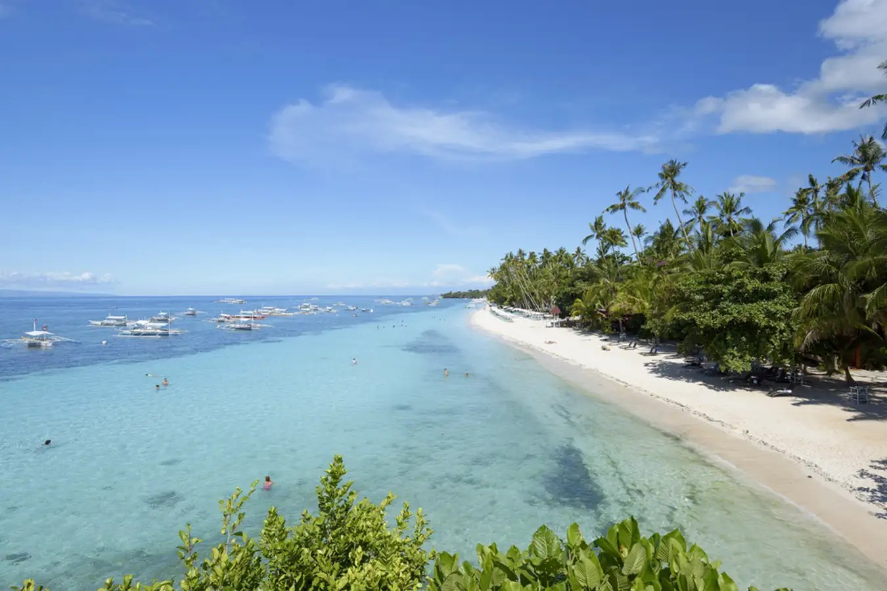

Known for its powdery white sand and vibrant nightlife, White Beach is one of the most famous beaches in the Philippines. It is divided into three stations, each offering a unique experience, from quiet retreats to bustling bars and restaurants.
El Nido Beaches
Location: El Nido, Palawan
El Nido is home to stunning beaches like Nacpan Beach and Seven Commandos Beach. These beaches feature pristine sand, turquoise waters, and dramatic limestone cliffs, making it a top destination for island-hopping and snorkeling.

Alona Beach
Location: Panglao Island, Bohol
Alona Beach is a vibrant stretch of white sand lined with resorts, restaurants, and dive shops. It offers a lively yet relaxing atmosphere, making it one of the most popular beaches in Bohol. The beach is fringed by coconut trees and clear, shallow waters, perfect for swimming and snorkeling. In the evenings, Alona comes alive with beachfront dining and live music.
Kalanggaman Island
Location: Palompon, Leyte
Kalanggaman Island is renowned for its postcard-perfect beauty. This sandbar is the island's iconic feature, with powdery white sand contrasting against the turquoise and deep blue hues of the sea. The island is uninhabited, which makes it an ideal destination for those seeking a serene and pristine escape from crowded tourist spots.